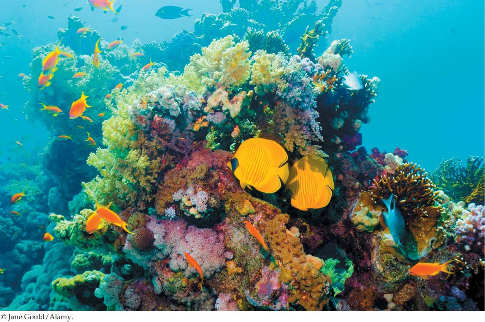

| 40 | Animal Behavior |
|
KEY CONCEPTS
40.1 Behavior Is Controlled by the Nervous System but Is Not Necessarily Deterministic 40.2 Behavior Is Influenced by Development and Learning 40.3 Behavior Is Integrated with the Rest of Function 40.4 Moving through Space Presents Distinctive Challenges 40.5 Social Behavior Is Widespread 40.6 Behavior Helps Structure Ecological Communities and Processes |

Within a coral reef ecosystem, individuals of some species of fish live in schools while individuals of other species move around in pairs. The behaviors shown by both types of fish help give structure to the fish community. Here we see a loose school of orange anthias fish at the left and a pair of golden butterflyfish (Chaetodon semilarvatus).
|
For scuba divers, the chance to see the diversity of fish in coral reef ecosystems is one of the greatest thrills of diving. Fish are by far the most diverse group of vertebrate animals. The number of described species of fish is only slightly lower than the number of all other types of vertebrates combined. Coral reefs are hotbeds of fish diversification. Fifteen percent of fish species—many of them dramatically colored—are found nowhere else and thus are endemic to coral reefs.
Without actually visiting reefs and looking hard at the fish living there, you might envision chaos. On any one reef, you might expect thousands of individuals, representing dozens of species, in endless random motion, mixing with each other in a riot of color.
In reality, however, the behaviors of the fish give a great deal of regularity and structure to these fish communities. If you are able to visit a reef and watch closely, you will notice that individuals of some species occur almost entirely in single-species groups—schools—that often stay close to particular coral structures. Individuals of some other species—such as the butterflyfish seen here—swim about in pairs. Virtually every time you see them, they are in pairs. Individuals of still other species are always associated with sea anemones, often living among the anemones’ tentacles. The ecological community is structured by the behaviors of the fish.
We can observe the same phenomenon in other types of communities, such as those of antelopes in the savannas of East Africa. Dozens of antelope species coexist in these grasslands—but not in chaos. Often when you see impala antelopes (Aepyceros melampus), for example, many of the individuals are in groups in which only one animal has large antlers. This structuring of the ecological community results from behavior. In this case, a dominant male—the animal with antlers—defends an area in which he gathers females around him and repels other males that attempt to join the group.
“Social behavior” refers to the behavioral relationships of individuals with other individuals of their own species. On the coral reef in the photo, we see two types of social behavior: school formation and pair formation. Throughout the study of behavior, a central question is why the behaviors we observe have evolved. Regarding social behaviors, what advantages might they have for the animals that participate in them?
In what ways might schooling behavior and pairing behavior be advantageous for the individuals involved?